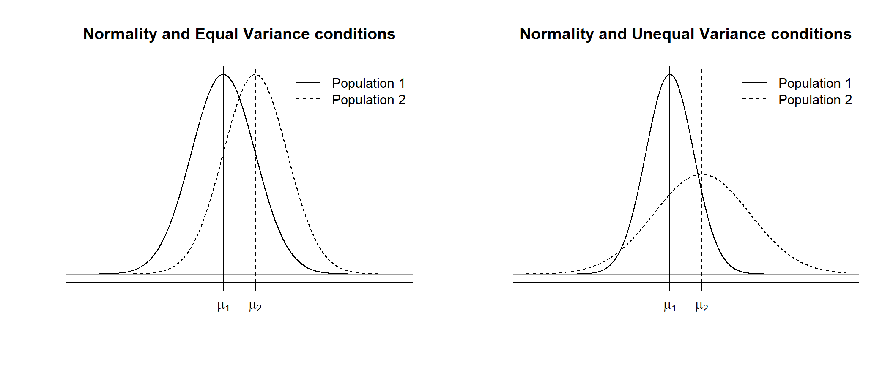
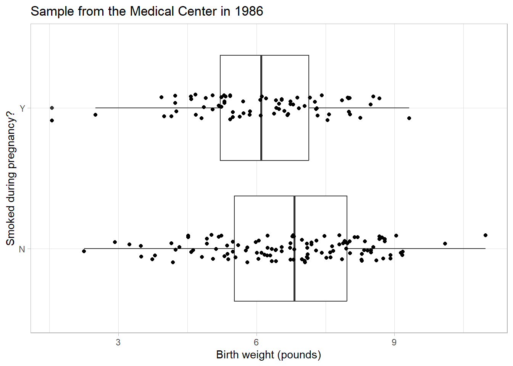
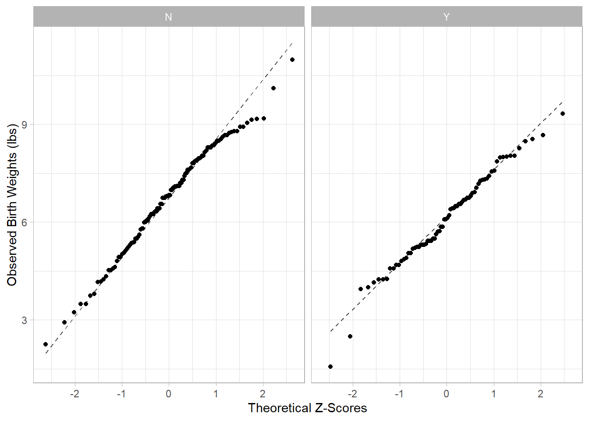
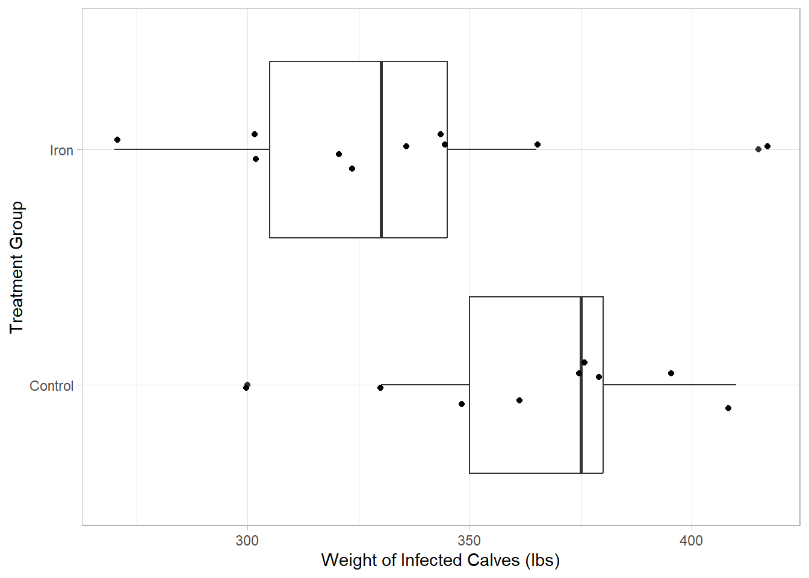
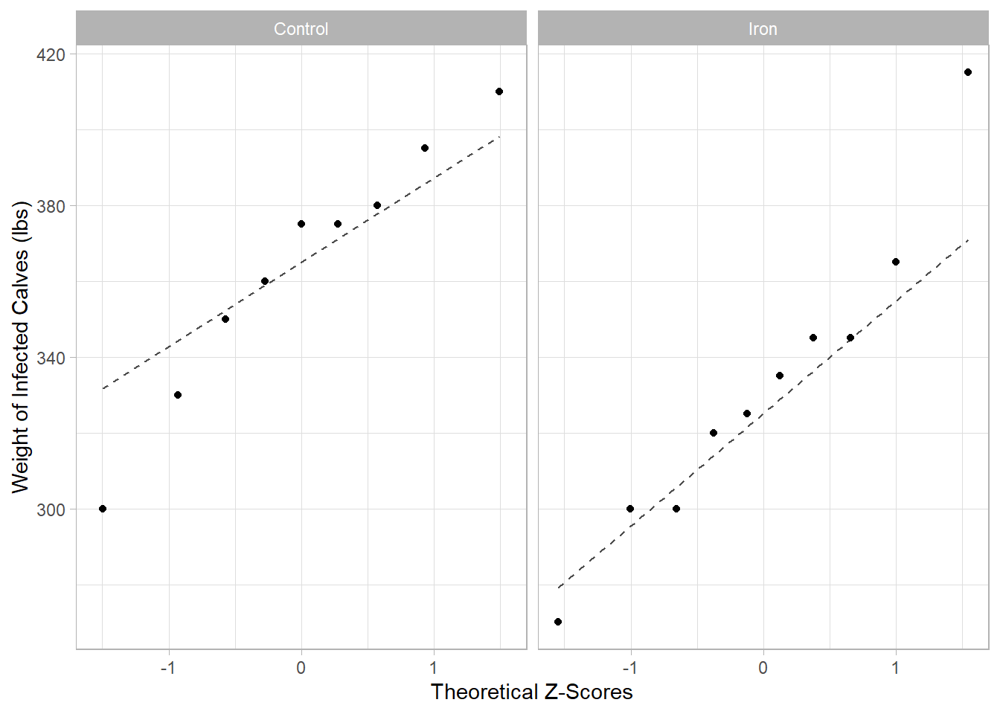
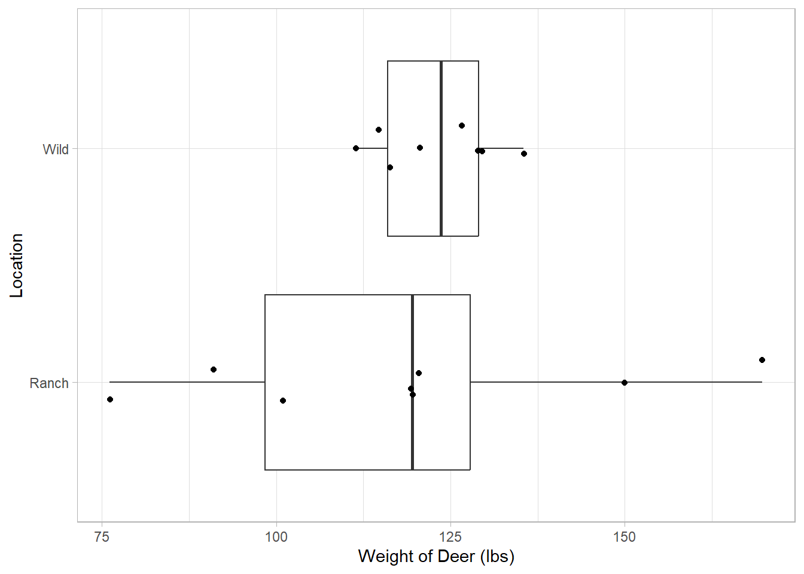
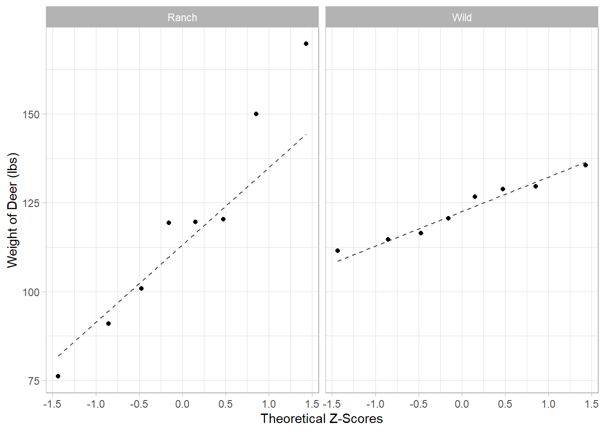

Inference for Two Independent Samples
In the last chapter, we discussed the one-sample t-test for the population mean \(\mu\) under the normality/sufficient sample size conditions. The unknown parameter \(\mu\) is estimated by the sample mean \(\bar{X}\), and the standard error of \(\bar{X}\) is estimated by \(\frac{S}{\sqrt{n}}\) to quantify the uncertainty of \(\bar{X}\) (where \(S\) is the sample standard deviation and \(n\) is the sample size). The one-sample t-test is used to test for the mean of a population. It can be also used to test for the expected change within subjects (i.e. the paired t-test).
Researchers often compare two groups (sub-populations). For example, are men taller than women? Some men are taller than women and vice versa, so it is not easy to answer the question. We can simply the question as follows:
- Are men taller than women, on average?
It leads to a clear answer because the population average is a number. We can compare whether the population average height of men is greater than the population average height of women or not. More formally, let \(\mu_1\) and \(\mu_2\) be the population mean height of men and of women, respectively.
1 Null and Alternative Hypothesis
We can formulate statistical hypothesis testing with the null and alternative hypothesis:
\(H_0\): \(\mu_1 - \mu_2 = 0\) (i.e., \(\mu_1 = \mu_2\))
\(H_1\): \(\mu_1 - \mu_2 > 0\).
In words, \(H_0\) states that the true mean height of men and of women are the same in the population, and \(H_1\) states that men are taller than women, on average, in the population. To perform the hypothesis testing for \(\mu_1 - \mu_2\), we need a sample of \(n_1\) men and a sample of \(n_2\) women. Given two samples, the following statistics can be calculated:
\(\bar{X}_1\): sample mean height of men
\(\bar{X}_2\): sample mean height of women
\(S_1\): sample standard deviation of men
\(S_2\): sample standard deviation of women
We can combine these statistics to test for \(\mu_1 - \mu_2\), and it is known as the two-sample t-test.
2 Data Collection for Two Samples
In many cases, we may not (or cannot) want to pair observations, but instead compare multiple independent groups (2 or more). These are Independent Samples, in which we randomly sample individuals from distinct groups.
2.1 Random Sampling from Independent Groups
We have already discussed one sampling strategy for independent samples:
- Stratified Random Sample: Divide your population into distinct/independent strata and randomly sample from within each stratum
Scenario: A sociologist wishes to compare the annual salaries of men and women. She obtains a random sample of 50 males and a random sample of 50 females and determines each person’s annual salary. Discuss the type of sampling scheme used in this study and identify the response and explanatory variables measured and the type (categorical, quantitative, etc.).
Response: Income – Quantitative/Continuous
Explanatory: Gender – Categorical/Nominal
Stratified Random Sample: the two groups (male/female) are independent because they are randomly sampled from two separate and unconnected groups (strata – gender), so the income of one individual has no influence on the income of another individual.
Unfortunately, observational studies cannot infer cause-and-effect because there is always a danger of confounding variables.
Confounding variables: an unaccounted-for explanatory variable which has an effect on the response variable. Its effect on the response cannot be separated out from the measured explanatory variable, preventing any conclusions about cause and effect from observational studies
Example: We measure a statistically meaningful relationship between drinking habits and heart disease, but is drinking alone the only possible cause of heart disease?
- High levels of drinking may also be associated with poor diet or lifestyle. Therefore, it could be a combination of drinking, diet and lifestyle that lead to higher rates of heart disease; diet and lifestyle are confounding variables.
2.2 Randomized Assignment of Treatments to Independent Groups
In order to measure a cause-and-effect relationship, we must perform an experiment.
Randomizing the type of treatment (Independent): An experiment that uses both comparison of two or more treatments and random assignments of subjects to treatments is a completely randomized design. Why is it important to randomly assign the experimental units to each treatment group?
- We randomize group assignment to make sure that our results are causal and not due to some confounding variable associated with individuals.
3 Test Statistic
Suppose we take a random sample of size \(n_1\) from \(N(\mu_1, \sigma_1)\) and a random sample of size \(n_2\) from \(N(\mu_2, \sigma_2)\) where \(\mu_1 - \mu_2\) is the unknown parameter to be tested. In most research questions, the null hypothesis is \(H_0\): \(\mu_1 - \mu_2 = 0\) (i.e., the same population mean), and the alternative hypothesis is one of the following three forms depending on the research question.
\(H_1\): \(\mu_1 - \mu_2 > 0\) (right-sided test)
\(H_1\): \(\mu_1 - \mu_2 < 0\) (left-sided test)
\(H_1\): \(\mu_1 - \mu_2 \ne 0\) (two-sided test)
For the two-sample t-test for \(\mu_1 - \mu_2\), the test statistic is given by
\[ T = \frac{\bar{X}_1 - \bar{X}_2 - 0}{\texttt{SE}} \, , \]
where the standard error \(\texttt{SE}\) is calculated as follows:
\[ \texttt{SE} = \begin{cases} \sqrt{ \frac{ (n_1 - 1) \, S_1^2 + (n_2 - 1) \, S_2^2 }{ n_1 + n_2 - 2 } \, \left( \frac{1}{n_1} + \frac{1}{n_2} \right) } \,\,\, \mathrm{under \,\, equal \,\, variance \,\, condition} \\ \\ \sqrt{ \frac{S_1^2}{n_1} + \frac{S_2^2}{n_2} } \,\,\, \mathrm{under \,\, unequal \,\, variance \,\, condition} \end{cases} \tag{1}\]
Under the condition of \(H_0\): \(\mu_1 - \mu_2 = 0\), the null distribution of the test statistic is \(T \sim \mathcal{T}(\nu)\), the T distribution with \(\nu\) degrees of freedom, where \(\nu\) is calculated as follows:
\[ \nu = \begin{cases} n_1 + n_2 - 2 \,\,\, \mathrm{under \,\, equal \,\, variance \,\, condition} \\ \frac{\left( \frac{S_1^2}{n_1} + \frac{S_2^2}{n_2} \right)^2}{ \frac{ \left( S_1^2 \, / \, n_1 \right)^2 }{n_1 - 1} + \frac{ \left( S_2^2 \, / \, n_2 \right)^2 }{n_2 - 1} } \,\,\, \mathrm{under \,\, unequal \,\, variance \,\, condition} \end{cases} \tag{2}\]
The long formula of \(\nu\) under unequal variance condition is known as the Welch-Satterthwaite formula.
3.1 Decision Based on the P-value
After calculating \(T = \texttt{t}\), the calculation of p-value depends on the direction of \(H_1\) as follows:
Right-sided test: p = \(1 - \texttt{pt}(\texttt{t}, \nu)\)
Left-sided test: p = \(\texttt{pt}(\texttt{t}, \nu)\)
Two-sided test: p = \(2 * \texttt{pt}(\texttt{t}, \nu)\) if \(\texttt{t} < 0\) or p = \(2 * (1 - \texttt{pt}(\texttt{t}, \nu))\) if \(\texttt{t} > 0\)
If p-value is less than \(\alpha\), we conclude \(H_1\). Otherwise, we conclude \(H_0\).
INTERPRETATION AND EVALUATION ARE THE SAME AS PREVIOUS TESTS!!!
4 Confidence Interval
The conclusion of two-sample t-test for the difference between two means \(\mu_1 - \mu_2\) is either \(H_1\) (evidence against \(H_0\) exists) or \(H_0\) (lack of evidence against \(H_0\)). In addition, it is important to estimate the unknown parameter \(\mu_1 - \mu_2\). The point estimation for \(\mu_1 - \mu_2\) is given by \(\bar{X}_1 - \bar{X}_2\). At a confidence level of \(1 - \alpha\), a confidence interval (CI) for \(\mu_1 - \mu_2\) is given by
\[ (\bar{X}_1 - \bar{X}_2) \pm t^* SE\]
where the standard error \(\texttt{SE}\) is given in Equation 1, and the critical value \(c\) is calculated by \(\texttt{qt}(1 - \alpha / 2, \nu)\) where the degrees of freedom \(\nu\) is given in Equation 2.
5 Conditions for Inference
Suppose a researcher wants to compare the two populations, say Populations 1 and 2, and assume both populations follow normal distributions, say \(N(\mu_1, \sigma_1)\) and \(N(\mu_2, \sigma_2\)). This condition is referred to as the normality condition. Let \(\mu_1\) and \(\sigma_1\) be the population mean and standard deviation of Population 1. Let \(\mu_2\) and \(\sigma_2\) be the population mean and standard deviation of Population 2.
There is also the condition of \(\sigma_1^2 = \sigma_2^2\) (which is equivalent to the condition of \(\sigma_1 = \sigma_2\)) is referred to as the equal variance condition (or homoscedasticity). The left figure below shows the normality condition with the equal variance condition, and the right figure shows the normality condition with the unequal variance condition.

5.1 Normality/Sufficient Sample Size Condition
As in the one-sample t-test, the normality condition can be visually assessed by the QQ plot on both samples. If data points of QQ plot substantially deviate from a straight line, it is a sign of violating the normality condition, but this visual assessment is somewhat subjective and vague.
gf_qq(~response | explanatory, data = mydata,
xlab = "Theoretical Z-Scores",
ylab = "Observed Sample Values") |>
gf_qqline()The violation of the normality condition is not a big concern when \(n_1 \ge 30\) and \(n_2 \ge 30\), as the t-test is robust to violation of that condition if there is sufficient sample size. In general, the minimum sample size per group, if the normality condition is met, is \(n_1 \ge 10\) and \(n_2 \ge 10\).
5.2 Equal Variance Condition
The population variances \(\sigma_1^2\) and \(\sigma_2^2\) can be estimated by the sample variances \(S_1^2\) and \(S_2^2\), respectively. As a simple rule of thumb of checking equal variance condition, if \(\frac{1}{4} \le \frac{S_1^2}{S_2^2} \le 4\) (i.e., the two sample variances are within 4-fold), we may proceed the two-sample t-test with the equal variance condition. Otherwise, we may proceed with the unequal variance condition.
6 Calculations in R
For the hypothesis test, we can calculate the t-test and p-value as follows:
#equal variance test
t.test(response ~ explanatory, mu = 0, alternative = c("two.sided", "less", "greater"), var.equal = TRUE )
#unequal variance test
t.test(response ~ explanatory, mu = 0, alternative = c("two.sided", "less", "greater"), var.equal = FALSE)For the confidence interval:
#equal variance ci
t.test(response ~ explanatory, var.equal = TRUE, conf.level = 0.95)$conf.int
#unequal variance ci
t.test(response ~ explanatory, var.equal = FALSE, conf.level = 0.95)$conf.int7 Case Study: Smoking and Birth Weight
A low birth weight is known to be associated with negative health outcome of newborn babies in both short-term and long-term. It is hypothesized that smoking during pregnancy is associated with a high risk of low birth weight. The dataset \(\texttt{birthwt.csv}\) is a sample of 189 women who gave a birth at the Baystate Medical Center in 1986 in Springfield, Massachusetts. The column \(\texttt{smoke}\) is the smoking status during pregnancy (\(\texttt{N}\) or \(\texttt{Y}\)), and the column \(\texttt{bwt}\) is the newborn baby’s birth weight in pounds.
7.1 Exploratory Data Analysis
Let us explore the data.
birthwt <- read_csv("data/birthwt.csv", show_col_types = FALSE) ### read data
head(birthwt, 5) ### first 5 lines# A tibble: 5 × 3
id smoke bwt
<dbl> <chr> <dbl>
1 1 N 5.12
2 2 N 8.42
3 3 Y 4.68
4 4 N 8.36
5 5 N 5.77df_stats(bwt ~ smoke, data = birthwt) ### descriptive stats by group response smoke min Q1 median Q3 max mean sd n missing
1 bwt N 2.25 5.5200 6.820 7.965 10.98 6.722435 1.655806 115 0
2 bwt Y 1.56 5.2175 6.105 7.140 9.32 6.098514 1.450623 74 0gf_boxplot(smoke ~ bwt, data = birthwt, #note switched order for horizontal boxplots
xlab = "Birth weight (pounds)",
ylab = "Smoked during pregnancy?",
title = "Sample from the Medical Center in 1986") |>
gf_jitter(height = 0.1) 
Clinically, a low birth weight is defined as a birth weight below 5.5 pounds. We can estimate that about 25.2% and 40.5% of babies in the non-smoking group and smoking group have a low birth weight, respectively, as follows.
### Note: A low birth weight is defined as bwt < 5.5.
mean((bwt < 5.5) ~ smoke, data = birthwt ) ### proportions by group N Y
0.2521739 0.4054054 Interpret the summary statistics and data visualization on the context of our research hypothesis.
7.2 Set up the Hypotheses
Set up the null and alternative hypothesis (note there is more than one way to do this) for the research hypothesis that those who smoke give birth to infants who weight less than those who do not smoke:
7.3 Assessing Normality condition
Let us first assess the normality condition using the QQ plot.
gf_qq(~ bwt | smoke, data = birthwt,
xlab = "Theoretical Z-Scores",
ylab = "Observed Birth Weights (lbs)") |>
gf_qqline()
Remember to consider the following:
- pattern compared to 1:1 line (not the same as y = x)
- pattern of the data points
- pattern assessed relative to sample size, n
- discuss if the values increase at the same rate as the cumulative frequency
7.4 Assessing Equal Variance Condition
Use the provided summary statistics to evaluate if the equal variance assumptions is met.
7.5 Two-sample T-test
Now, let us perform the two-sample t-test for \(\mu_N - \mu_Y\) at a significance level of \(\alpha = 0.05\) using the \(\texttt{t.test}\) function.
t.test(bwt ~ smoke, data = birthwt,
mu = 0, alternative = "greater", var.equal = TRUE)
Two Sample t-test
data: bwt by smoke
t = 2.6516, df = 187, p-value = 0.004349
alternative hypothesis: true difference in means between group N and group Y is greater than 0
95 percent confidence interval:
0.2349654 Inf
sample estimates:
mean in group N mean in group Y
6.722435 6.098514 Interpret and evaluate the p-value in the context of the scenario.
Quick Note: R defaults to alphabetical order for the differences (so N - Y). If we wanted to reverse it we would have to do the following.
- Reorder the variable values in R.
birthwt2 <- birthwt |>
mutate(smoke = factor(smoke, levels = c("Y", "N")))- Calculate the test statistics and p-value, adjusting the alternative for the level order.
t.test(bwt ~ smoke, data = birthwt2,
mu = 0, alternative = "less", var.equal = TRUE)
Two Sample t-test
data: bwt by smoke
t = -2.6516, df = 187, p-value = 0.004349
alternative hypothesis: true difference in means between group Y and group N is less than 0
95 percent confidence interval:
-Inf -0.2349654
sample estimates:
mean in group Y mean in group N
6.098514 6.722435 7.6 Confidence Interval
Let us estimate \(\mu_N - \mu_Y\) using the point estimation and 95% CI.
t.test(bwt ~ smoke, data = birthwt, conf.level = 0.95, var.equal = TRUE)$conf.int[1] 0.1597438 1.0880988
attr(,"conf.level")
[1] 0.95Interpret the Confidence Interval and evaluate it in consideration of the hypothesis test.
7.7 Write A Conclusion
Using all of the above information, write a report about how smoking impacts birth weights using statistical reasoning.
8 Wrap-up
In your groups work on the following problems. You can check your answers below. All calculations (numeric answers) must be rounded to four decimals (e.g., 0.6667 instead of 2/3, 0.5 or 0.5000 instead of 1/2) unless specified. Be ready to show your work on the board.
8.0.1 Problem 1
Multiple-choice: Which of the following tests is for comparing the two population means under the normality condition?
8.0.2 Problem 2
Fill in the blanks. In general, a small p-value is statistical evidence against [part a] in favor of [part b], so we conclude [part c] when a p-value is smaller than a fixed [part d]. (Word choice: p-value, significance level, test statistic, null hypothesis, alternative hypothesis, normality condition)
Answer
- null hypothesis
- alternative hypothesis
- alternative hypothesis
- significance level
8.0.3 Problem 3
Multiple-choice: Which of the following statements is the null hypothesis of two-sample t-test?
8.0.4 Problem 4
Multiple-choice: Which of the statements is the alternative hypothesis of two-sample t-test?
8.0.5 Problem 5
Multiple-choice: Which of the statements is a reasonable guess when data points of a QQ plot follow the 1:1 line?
9 Assignment
New Instruction: You must submit an html file generated by Quarto in Canvas. While you can check numeric answers here, complete work is expected for the problems below. The assignment will be graded based on the quality of the html document (e.g., completeness and organization. If an R code which is not demonstrated in the course material is used, it will be regarded as use of unacceptable sources and/or aids, and it will result in zero in the assignment. Such a case may be reported according to the CSUMB Academic Integrity Policy.
9.0.1 Problem 1
Let \(\mu_1 - \mu_2\) be the parameter of interest. Suppose the sample means are \(\bar{X}_1 = 100\) and \(\bar{X}_2 = 120\), sample standard deviations are \(S_1 = 10\) and \(S_2 = 40\), and sample sizes are \(n_1 = 20\) and \(n_2 = 25\). Calculate the following without using the \(\texttt{t.test}\) function. (You must show your work in R.)
- standard error under the condition of equal variance
Answer
9.1842
- degrees of freedom under the condition of equal variance
Answer
43
- T statistic under the condition of equal variance
Answer
-2.1777
- p-value for the left-sided test
Answer
0.0175
- standard error under the condition of unequal variances
Answer
8.3066
- degrees of freedom under the condition of unequal variances
Answer
27.6831
- T statistic under the condition of unequal variances
Answer
-2.4077
- p-value for the two-sided test
Answer
0.023
9.0.2 Problem 2
When calves are infected by a bacterium known as M. paratuberculosis, they suffer from chronic diarrhea and lose weight. Researchers hypothesized that iron will promote bacterium growth, so infected calves will lose even more weight by the iron supplementation. (Therefore, if this hypothesis is confirmed, the treatment of M. paratuberculosis shall not include iron.) The researchers randomly sampled 19 calves infected by M. paratuberculosis, and randomly assigned 9 calves to the control group (no iron supplementation) and 10 calves to the active group (iron supplementation). The dataset \(\texttt{calves.csv}\) includes the 19 calves. The column \(\texttt{weight}\) is the body weight measured in pounds, and \(\texttt{group}\) is the group assignment (\(\texttt{Control}\) or \(\texttt{Iron}\)). Let \(\mu_C\) denote the expected weight (pounds) in the control group and \(\mu_I\) denote the expected weight in the experimental group. By the alphabetical order of the group names, \(\texttt{Control}\) and \(\texttt{Iron}\), the parameter of interest will be defined as \(\mu_C - \mu_I\) in R. Use a significance level of \(\alpha = 0.05\) for all hypothesis testing in this exercise.
Download the data here: calves.csv
- What is the null hypothesis \(H_0\)? Write a verbal description as well.
- What is the alternative hypothesis \(H_1\)? Write a verbal description as well.
- Provide descriptive statistics and a boxplot for the variable of interest by the two groups. Describe in words what you notice in the context of the research question.
Answer
response group min Q1 median Q3 max mean sd n missing
1 weight Control 300 350 375 380 410 363.8889 33.61341 9 0
2 weight Iron 270 305 330 345 415 332.0000 40.01389 10 0
- Create a QQ Plot for the scenario and evaluate the conditions of normality, sufficient sample size, and equal variance.
Answer

(33.6134^2)/(40.01389^2) #greater than 1/4 and less than 4, so equal variance[1] 0.7056727Note sample sizes!
- Use R and
t.test()to find the test statistics and p-value.
Answer
Two Sample t-test
data: weight by group
t = 1.8687, df = 17, p-value = 0.0395
alternative hypothesis: true difference in means between group Control and group Iron is greater than 0
95 percent confidence interval:
2.203462 Inf
sample estimates:
mean in group Control mean in group Iron
363.8889 332.0000 - Report the T statistic.
Answer
1.8687
- Calculate the p-value. Interpret the p-value.
Answer
0.0395 Be sure to interpret in context.
- From the two-sample t-test, do you conclude \(H_0\) or \(H_1\) at a significance level of \(\alpha = 0.05\)? Evaluate the p-value.
Answer
Strong evidence against the null in favor of the alternative
- Calculate the lower bound of 95% CI.
Answer
[1] -4.113947 67.891725
attr(,"conf.level")
[1] 0.95
Answer
-4.113947
- Calculate the upper bound of 95% CI.
Answer
67.891725
- Interpret the confidence interval.
Answer
Remember, the parameter is now the “difference between true mean weight for calves taking no iron (control) and the true mean weight for calves taking iron”
- State the conclusion in the context. You must include the following: significance level, sample size, conclusion about \(\mu_C - \mu_I\) in the context, relevant statistics (T, DF, and p), point estimate and 95% CI for \(\mu_C - \mu_I\), and units. When you write about the difference in two means, clearly state which group has higher or lower mean.
Answer
Note that the CI and Test do not “agree”, this is because the alternative is one-sided and the Confidence Interval only agrees with the two-sided test. This is why it is important to consider ALL the evidence.
9.0.3 Problem 3
Researchers have hypothesized that the body size (measured by weight) of wild animals is different depending on environment. For a pilot study, the researchers randomly selected eight young deer raised in ranch and eight young deer raised in an wild environment. The dataset \(\texttt{deer.csv}\) includes the 16 deer. The column \(\texttt{weight}\) is the body weight measured in pounds, and \(\texttt{environment}\) is the group (\(\texttt{Ranch}\) or \(\texttt{Wild}\)). Let \(\mu_R\) denote the expected weight in the ranch group and \(\mu_W\) denote the expected weight in the wild group. By the alphabetical order of group names, \(\texttt{Ranch}\) and \(\texttt{Wild}\), the parameter of interest will be defined as \(\mu_R - \mu_W\) in R. In this pilot study, due to lack of prior studies, the researchers could not specify which group has a higher average of body weight. Use a significance level of \(\alpha = 0.05\) for all hypothesis testing in this exercise.
Download the data here: deer.csv
- What is the null hypothesis \(H_0\)? Write a verbal description as well.
- What is the alternative hypothesis \(H_1\)? Write a verbal description as well.
- Provide descriptive statistics and a boxplot for the variable of interest by the two groups. Describe in words what you notice in the context of the research question.
Answer
response environment min Q1 median Q3 max mean sd n
1 weight Ranch 76.1 98.425 119.50 127.800 169.7 118.3875 30.43257 8
2 weight Wild 111.5 115.975 123.65 129.075 135.5 122.9875 8.44113 8
missing
1 0
2 0
- Create a QQ Plot for the scenario and evaluate the conditions of normality, sufficient sample size, and equal variance.
Answer

(30.43257^2)/(8.44113^2) #greater than 4, so unequal variance[1] 12.99799Note sample sizes!
- Use R and
t.test()to find the test statistics and p-value.
Answer
Welch Two Sample t-test
data: weight by environment
t = -0.41197, df = 8.0708, p-value = 0.6911
alternative hypothesis: true difference in means between group Ranch and group Wild is not equal to 0
95 percent confidence interval:
-30.30906 21.10906
sample estimates:
mean in group Ranch mean in group Wild
118.3875 122.9875 - Report the T statistic.
Answer
t = -0.41197
- Calculate the p-value. Interpret the p-value.
Answer
p-value = 0.6911 Be sure to interpret in context.
- From the two-sample t-test, do you conclude \(H_0\) or \(H_1\) at a significance level of \(\alpha = 0.05\)? Evaluate the p-value.
Answer
No evidence against the null in favor of the alternative
- Calculate the lower bound of 95% CI.
Answer
[1] -30.30906 21.10906
attr(,"conf.level")
[1] 0.95
Answer
-30.30906
- Calculate the upper bound of 95% CI.
Answer
21.10906
- Interpret the confidence interval.
Answer
Remember, the parameter is now the “difference between true mean weight for deer raised on ranches and the true mean weight for deer raised in the wild”
- State the conclusion in the context. You must include the following: significance level, sample size, conclusion about \(\mu_R - \mu_W\) in the context, relevant statistics (T, DF, and p), point estimate and 95% CI for \(\mu_R - \mu_W\), and units. When you write about the difference in two means, clearly state which group has higher or lower mean.
Answer
Note the small sample size - should we trust the results given by the t-distribution?